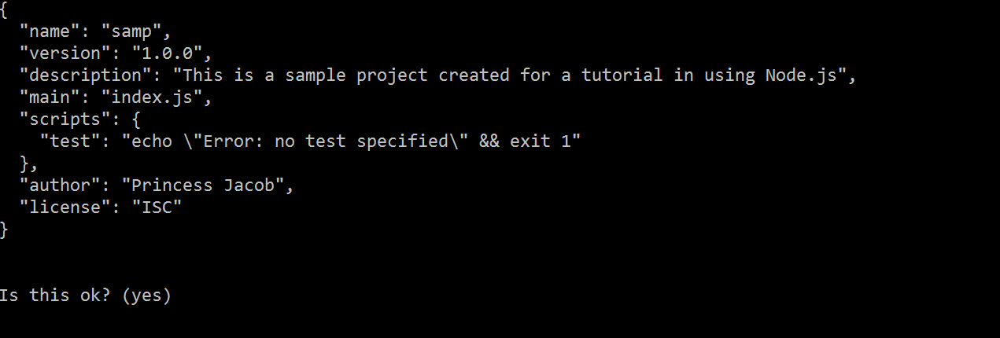
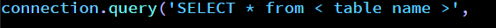

Node.js is the server side Javascript and is composed of the MEAN stack: MongoDB (document oriented database), Express Shares (server side framework), Angular.js (client side framework) and Node.js, which is built on the same engine as Chromium.
Node.js currently have two versions with v 6.10.3 having a long-term support. This version can be used to create desktop applications. Node.js also comes with npm, an installer for node.
You will be asked to enter details to be placed on package.json, afterwards the contents will be shown to you and you’ll be asked again if the contents is alright with you. You can always go back to edit it again.
The following allows us to create a server that runs on our desired port: 81 (changeable).
Placing the handler allows us to send a request to the server and return Hello World as a response.
This allows you to create a connection to your database. While the next lines will help you in querying from the database.
Express.js is a backend app framework that facilitates the hard parts to implement in Node.js. To install this framework, key in your cmd: npm install express.js –save.
This allows you to generate HTML files in a pug format in which you don’t need to place opening and closing tags as long as you placed everything in a hierarchical format. It will then be generated as HTML files with proper taggings.
To know more about Node.js, please visit references.
remy(n.d.). nodemon. Retrived from https://www.npmjs.com/package/nodemon
Ornbo, G.(n.d.). Retrieved from https://shapeshed.com/creating-a-basic-site-with-node-and-express/
Hello world example(n.d.). Retrieved from http://expressjs.com/en/starter/hello-world.html